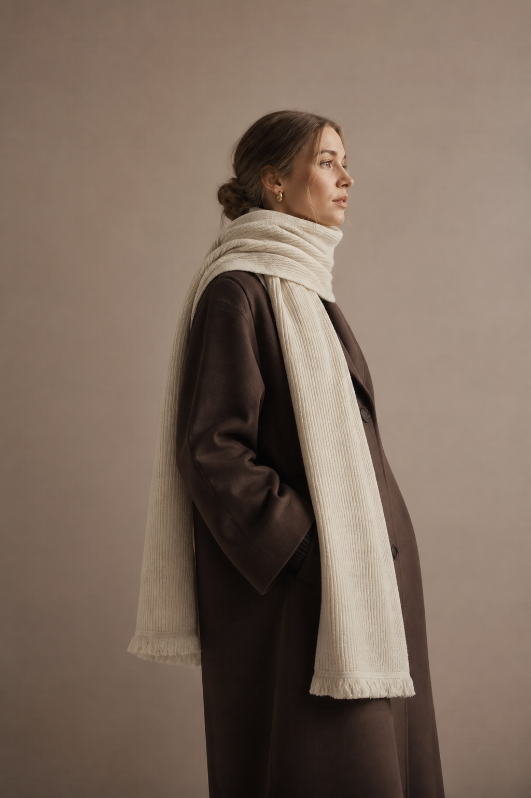

STILL FORM / 2026
Natural materials.
Considered everyday pieces.

Sustainable style
made simple
Thoughtful fashion made from natural fibers and ethical production.
Sustainable
Collection 2026
Timeless pieces, made for the planet.
67 itemsPopular first
Recycled Wool Scarf
A soft scarf crafted from recycled wool, finished with subtle fringe and a gentle texture for everyday comfort.
€59.00